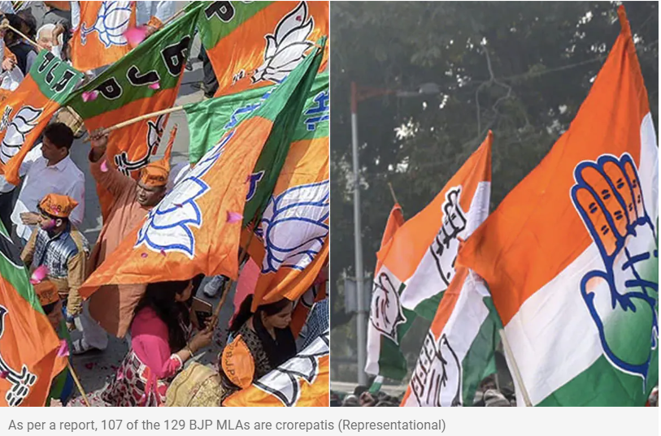
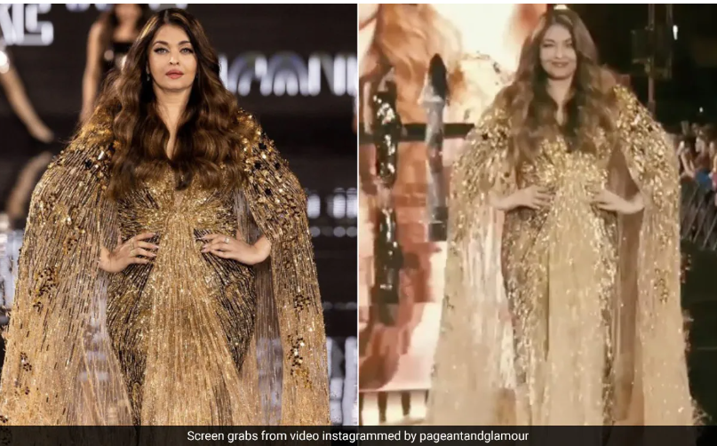

Netflix’s Squid Games, Wednesday, and other hit originals could soon get video game spin-offs
After producing original movies and TV shows, Netflix is betting big on gaming and plans on spinning off
more of its hit originals into games. The idea seems to be to lure more of its subscribers into its
gaming services
In Madhya Pradesh, 81% Of MLAs Are Crorepatis, Most From BJP: Report
The report by the Association for Democratic Reforms also revealed that the 230 sitting MLAs in
Madhya Pradesh own average assets worth ₹ 10.76 crore.

GATE 2024: Indian Institute Of Science Releases Sample Papers For Data Science And Artificial
Intelligence
The sample paper has been released as the two subjects are newly introduced in the exam this year.
Aishwarya Rai Bachchan Strikes Gold With Her Bold Ramp Walk At The Eiffel Tower For L'Oreal Paris
Amidst Paris Fashion Week, Aishwarya Rai Bachchan's golden ramp walk for L'Oreal's "Walk Your Worth"
show proved she was worth all the attention.

Cricket World Cup 2023: Sara Tendulkar's Reaction Goes Viral After Shubman Gill Hits Fifty Against
Bangladesh - Watch
India vs Bangladesh, Cricket World Cup: Sara Tendulkar's reaction after Shubman Gill's half-century
during the Cricket World Cup 2023 match between India and Bangladesh went viral.